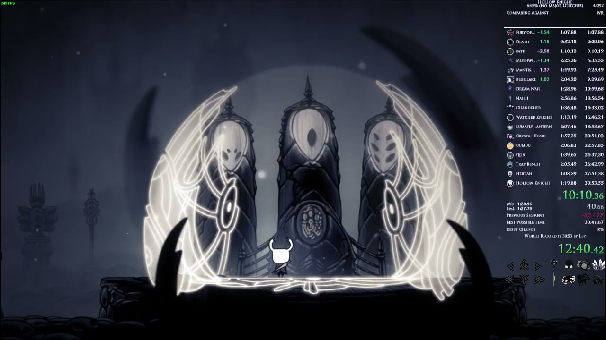

Bardzo dobry tutorial, stworzony przez jednego z topowych graczy. Może być trochę przestarzały w niektórych miejscach, mimo tego bardzo dokładnie przedstawia wiele konceptów i taktyk, bardzo dobry na rozpoczęcie swojej własnej przygody.
Szybkie wyjaśnienie, co po kolei się robi, mało szczegółowe, ale dobre gdy chce mieć się tylko ogólne pojęcie w temacie lub odświerzyć informacje.

Obecny rekord świata, nic nie jest tłumaczone, ale to jak na razie najlepszy run. Można się na nim wzorować w wielu aspektach.